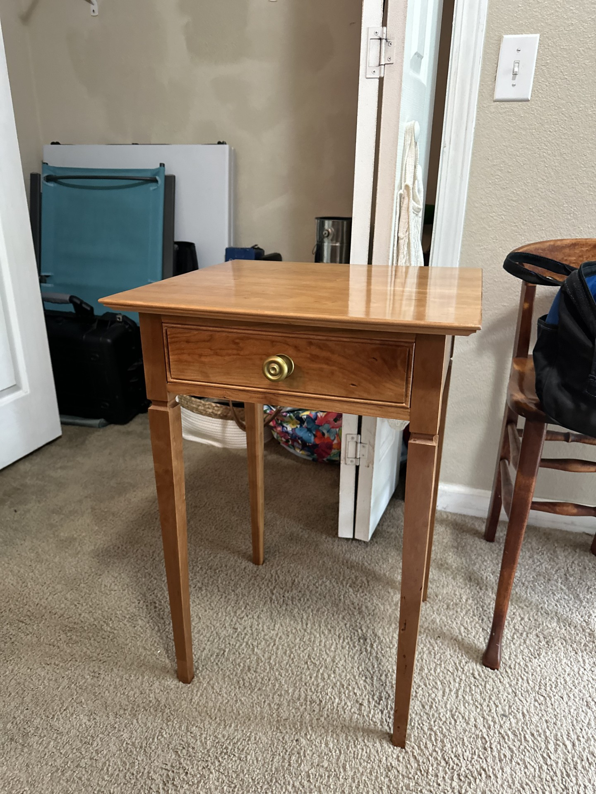
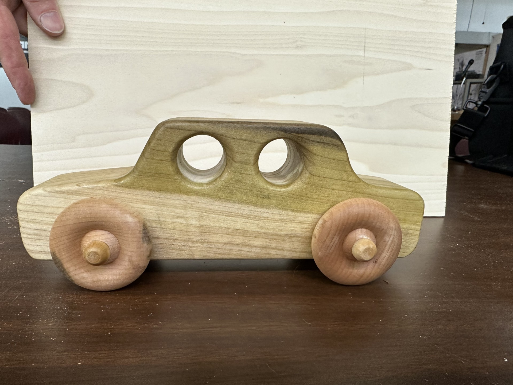
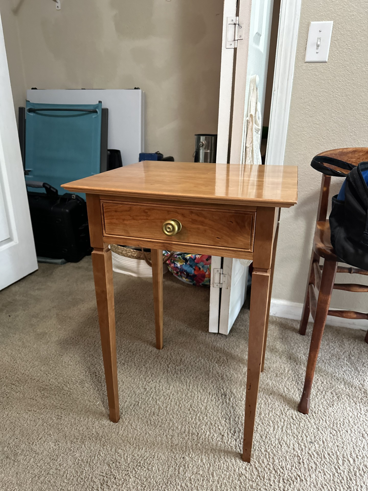
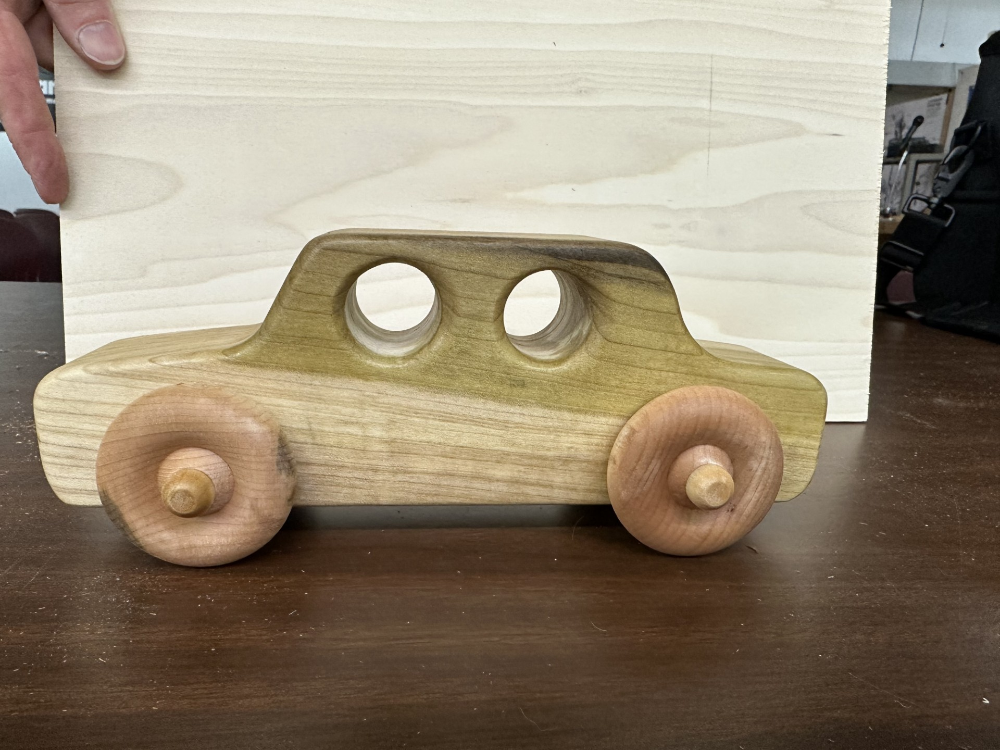

Woodworking Projects
I am a member of the Valley Woodworkers of West Virginia, a nonprofit with two missions. One is to provide heirloom quality toys to the Salvation Army, the other is to pass the craft on to others by providing education and access to tools and materials. Thanks to the generosity of these members I have gotten to make tables for myself and my mother and toys for my coworkers kids and the Salvation Army.

 




Stained Glass Projects
One of the guys in VWWV brought in a gorgeous wall clock and cabinet with a stained glass window that he had built. He mentioned that he had made the glass under the supervision of a woman who owned a stained glass studio in the area. I was impressed and resolved to make my way down there. I quite enjoyed working with Amanda and I hope to make some lamp shades later this summer when I am done with my end tables.

Coding Projects
Explore my software development projects.